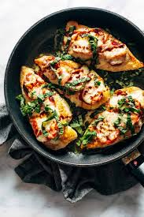

Caprese Chicken

How to Make the Best Caprese Chicken
Baked Caprese chicken is nothing less than delicious and delightful!
It's fancy enough for company but simple enough for a quick and easy weeknight dinner that your family will go crazy for!
Ingredients
- tomatoes
- fresh mozzarella
- herbs
- olive oil
- vinegar
Steps
- In a large skillet over medium-high heat, heat oil.
Season chicken with salt and pepper and cook until golden
and cooked through, 6 minutes per side.
Transfer to a plate.
- Add balsamic vinegar to skillet, then add garlic and cook until fragrant, 1 minute. Add tomatoes and season with salt.
Let simmer until soft, 5 to 7 minutes. Stir in basil.
- Return chicken to skillet and nestle in tomatoes. Top with mozzarella and cover with a lid to melt.
- Spoon tomatoes over chicken and serve.